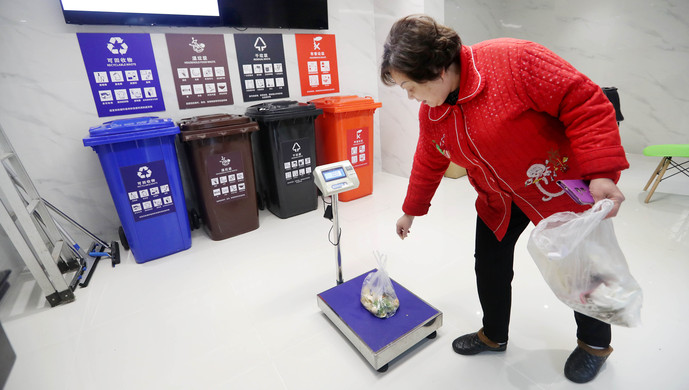
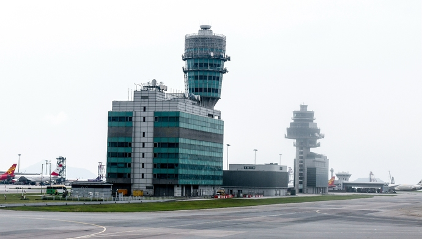
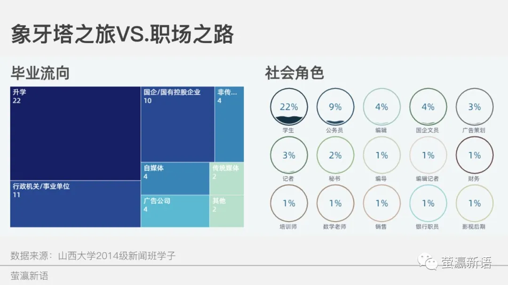
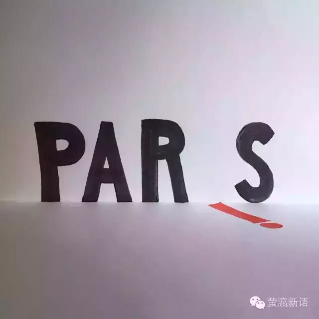

《2020营商环境报告》数据详解：中国为什么进步这么快
《解放日报》数据新闻部实习
在世界银行于10月24日上午发布的《2020营商环境报告》中，中国位列第31名。在去年由第78位提升至第46位之后，中国又往前迈进了15位。而在2015年，中国的排名还是第90位。

别再拿来华留学教育支出说事了！
《解放日报》数据新闻部实习
教育部2018年决算报告新近出炉，其中用于来华留学教育方面的支出为33.83亿元，同期小学教育支出6.45亿元，高中教育支出22.86亿元，因山东大学“学伴制度”事件，有关来华留学支出也受到普遍关注。为何决算报告中留学教育方面的支出高于小学与高中教育支出？各个大学用于外国学生来华留学教育的支出到底怎么花的？

超强台风“利奇马”来袭，影响预计超过去年三台风
《解放日报》数据新闻部实习
上海台风预警信号9日22时10分从黄色升级为橙色，防汛防台应急响应于今天18时已经升级为二级。这是上海今年发布的首个台风橙色预警，意味着上海在未来24小时内，沿江沿海地区最大阵风可达11级至12级。在台风预警信号的四个等级里，橙色属于第二高的强度。在早些时候的上午6时，中央气象台发布了今年首个红色台风预警，随后中国气象局也启动了重大气象灾害（台风）二级应急响应。专家预计台风“利奇马”将于10日凌晨到上午在浙江象山到苍南一带沿海登陆,最大可能在浙江台州到乐清一带沿海登陆。超强台风“利奇马”来势汹汹，受本次台风影响的上海、浙江省、福建省、江苏省部分县市均发布了不同程度的台风预警。

来看看这全球15个城市的垃圾分类图标，哪个最好懂？
《解放日报》数据新闻部实习
这两天被垃圾分类的示意图刷屏了？“干垃圾不是‘干’的，湿不是‘湿’的。“猪能吃的是湿垃圾，猪不能吃的是干垃圾，猪吃了会死的是有害垃圾，可以卖出去换猪的叫可回收垃圾。”……大家开足了脑洞去理解和记忆垃圾分类到底怎么分，为什么这么分。

香港机场连续两日取消航班，一个国际超大枢纽机场瘫痪的后果有多严重
《解放日报》数据新闻部实习
这两天被垃圾分类的示意图刷屏了？“干垃圾不是‘干’的，湿不是‘湿’的。“猪能吃的是湿垃圾，猪不能吃的是干垃圾，猪吃了会死的是有害垃圾，可以卖出去换猪的叫可回收垃圾。”……大家开足了脑洞去理解和记忆垃圾分类到底怎么分，为什么这么分。

数读 | 研究生“选导”大调查 选入《中国研究生》杂志第170期
《上海大学研究生报》实践
秋季学期已经接近尾声，研究生新生也大多完成了“选导”大事，那么在这次选导大事件中，新生们呈现出了怎样的研究生群像？经历了怎样的波折？大家又希望遇见一位怎样的导师？
数读|你的未来会怎样？
《上海大学研究生报》实践
进入研究生阶段，不仅意味着学历的提升，更多地是在提醒你“老大不小”了，该考虑考虑自己未来的方向了！你对自己未来的职业有怎样的期待和规划呢？你希望待在一座怎样的城市？希望拿到什么层次的薪水？你的能力是否支撑得起你的梦想？还是说，你抬起头却一片茫然……
学为人师，情洒边疆|访上海大学材料学院教授李谋成
《上海大学研究生报》实践
古语有言“一日为师，终身为父”。师生之间是一种“相互关系”。高校教师如何成为一名优秀的“导师”？学生如何成为一名合格的“学生”？导师与学生间又该如何相处？在科研教学岗位上耕耘近二十年的李谋成教授为我们带来他多年积累的经验和感悟。

横刀跨马出江湖：山西大学2014级新闻班毕业两年记
公众号“萤灜新语” 实践
2020年5月，山西大学2016级毕业答辩结束。距2018年5月2014级答辩，已有两年；距我们拿着毕业证书各奔东西，也是两年。问一问东西，岿然不动在太原者有之，更多人选择了北上京津、南下湘粤、东进江浙、西突陕川。东西南北中的人儿，无论升学，还是工作，时机一到，一步踏出本科，迎面便是江湖。
工程完没完？校门开不开？
公众号“萤灜新语” 实践
（萤瀛新语5月12日电）5月7日，笔者在“山西大学学生会”微信订阅号了解到“话说新校门修好了，你造吗？”的消息，但笔者今日发现：现在的新校门大门紧闭，工人们仍在脚手架上工作，维修工程仍在紧张进行。

PARIS，让IS倒下！
公众号“萤灜新语” 实践
法国当地时间11月13日晚上，巴黎市中心一餐馆和法兰西球场附近等多处发生枪击和爆炸事件，截至目前已确认造成153人死亡，伤亡人数仍在不断上升。法国总统奥朗德宣布全国最高级别反恐戒严，全国宵禁，交通戒严，法国全国国境关闭。这是自9.11以来，首次有世界主要大国因恐怖主义行动而采取如此严厉的紧急措施。
女护士的制服诱惑，了解一下？
饕餮文化传播工作室实习
护士服、方领衬衫、一步裙、西装裤……平时是一本正经的工作装，地地道道的医院女护士。下班后则换上曲裾、直裾、襦裙、袍衫、褙子、深衣、玄端……化身汉服美女子。